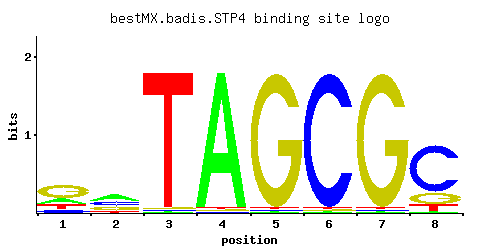

STP4
YDL048C
Protein containing a Kruppel-type zinc-finger domain; has similarity to Stp1p, Stp2p, and Stp3p
Best-performing DNA-binding model.

View and copy the recommended matrices ↘
A | 0.19 0.40 0.01 0.97 0.01 0.01 0.01 0.01 C | 0.11 0.29 0.01 0.01 0.01 0.97 0.01 0.72 G | 0.55 0.24 0.01 0.01 0.97 0.01 0.97 0.17 T | 0.15 0.07 0.97 0.01 0.01 0.01 0.01 0.10
A | 19 40 1 97 1 1 1 1 C | 11 28 1 1 1 97 1 72 G | 55 24 1 1 97 1 97 17 T | 15 7 97 1 1 1 1 10
A | -0.52 0.22 -3.47 1.11 -3.47 -3.47 -3.47 -3.47 C | -0.49 0.48 -2.89 -2.89 -2.89 1.68 -2.89 1.39 G | 1.12 0.29 -2.89 -2.89 1.68 -2.89 1.68 -0.06 T | -0.76 -1.52 1.11 -3.47 -3.47 -3.47 -3.47 -1.16
Alternative candidate matrices 4
Historical matrix candidates from the original ScerTF database. Expand a source to inspect its original logo, scores, and matrix values.
STP4Foat et. al.P = 0.009335View matrix ↘
STP4Macisaac et. alP = 6.63e-09View matrix ↘
STP4Zhu et. al.P = 2.66e-06View matrix ↘
STP4Zhao and StormoP = 1View matrix ↘
Gene-level annotations and interactions.
Genes bound in ChIP-chip experiments 53 genes
YAL040C, YAL063C, YBR083W, YCR018C-A, YCR019W, YDR278C, YDR495C, YDR543C, YDR544C, YDR545W, YER002W, YER011W, YER124C, YER125W, YER189W, YER190W, YGL071W, YGL072C, YGL074C, YGL258W, YHR160C, YIL159W, YIL160C, YIR020C, YJL148W, YJL184W, YJL185C, YKL131W, YKL133C, YKR009C, YKR097W, YLR008C, YLR009W, YLR135W, YLR463C, YLR465C, YLR467W, YMR011W, YMR017W, YMR018W, YMR193W, YNL337W, YOL084W, YOL085C, YOR019W, YOR032C, YOR058C, YOR236W, YOR327C, YOR328W, YPL141C, YPL230W, YPR184W
Genes affected by TF deletion 59 genes
YDR222W, YDR034C-A, YDR365W-B, YGR122C-A, YHR145C, YOR038C, YPL014W, YLR374C, YMR103C, YGR250C, YML027W, YMR104C, YMR136W, YDR340W, YLR121C, YHR192W, YCR021C, YOL051W, YDL072C, YKL051W, YCR018C-A, YMR023C, YNL055C, YNR066C, YJR148W, YOR384W, YMR145C, YIL060W, YIR035C, YLR375W, YMR144W, YNL182C, YOL083W, YPL273W, YER064C, YPL087W, YOL002C, YOR273C, YGR138C, YLR414C, YOR019W, YNL033W, YGR139W, YHR068W, YNL160W, YPR002C-A, YBR054W, YLR297W, YDR055W, YER138W-A, YMR034C, YPL257W-B, YHR135C, YMR181C, YMR211W, YMR250W, YOR092W, YER050C, YNR019W
Genes supported by both experiments 2 genes
YCR018C-A, YOR019W